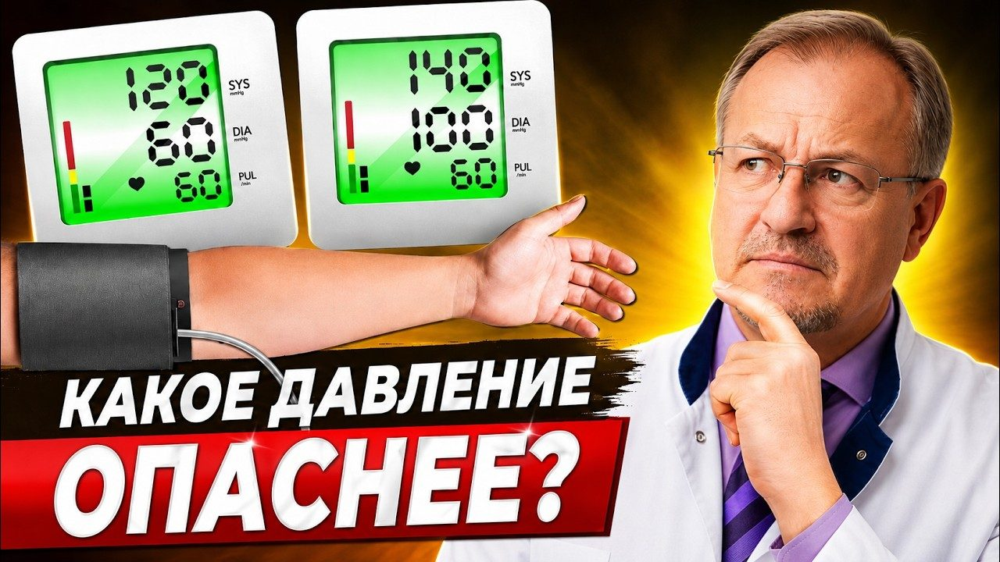
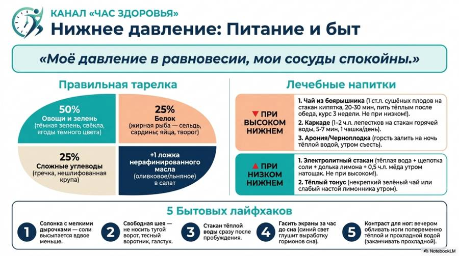
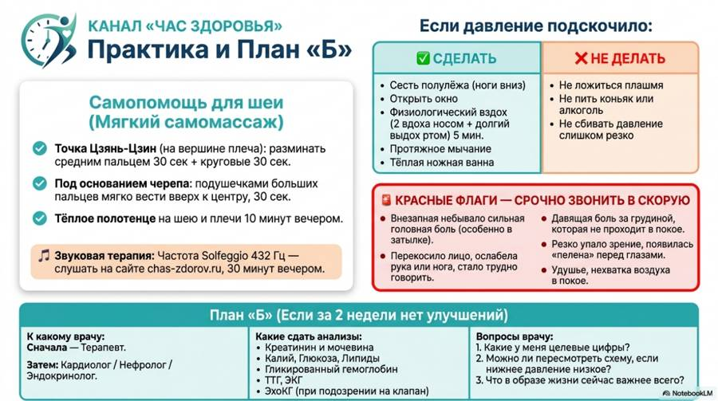

Материалы к выпуску
Как вернуть нижнее давление в норму своими руками? Простой домашний способ без аптеки.
Здесь протокол из этого выпуска. Скачайте и распечатайте — так проще не забывать о главном каждый день.
Карточка на холодильник


Новые выпуски и карточки — первыми в нашем Telegram-канале.
Открыть Telegram